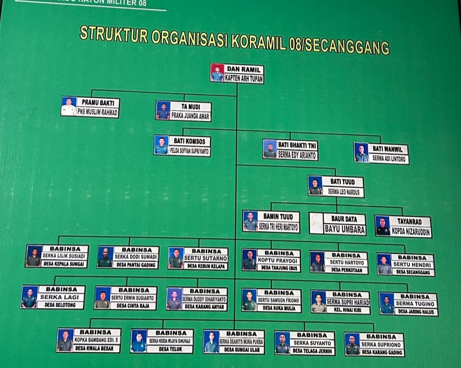

Koramil 08/Secanggang merupakan satuan kewilayahan yang dibentuk untuk melaksanakan tugas pembinaan teritorial serta menjaga keamanan dan ketertiban di wilayah Kecamatan Secanggang. Sejak awal berdirinya, Koramil 08/Secanggang berperan sebagai ujung tombak TNI Angkatan Darat dalam membangun hubungan yang harmonis dengan masyarakat serta mendukung berbagai program pemerintah di tingkat kecamatan. berdiri secara resmi pada tanggal 25 oktober 1984. Satuan ini merupakan bagian dari komando distrik militer 0203 atau kodim 0203/Langkat.
| Nama Satuan | : Koramil 08/Secanggang |
| Kodim Induk | : Kodim 0203/Langkat |
| Wilayah Binaan | : Kec. Secanggang, Kab. Langkat |
| Alamat Makoramil | : Jl. cinta raja,kec. Secanggang,Kabupaten Langkat |

Danramil: KAPTEN ARH TUPAN